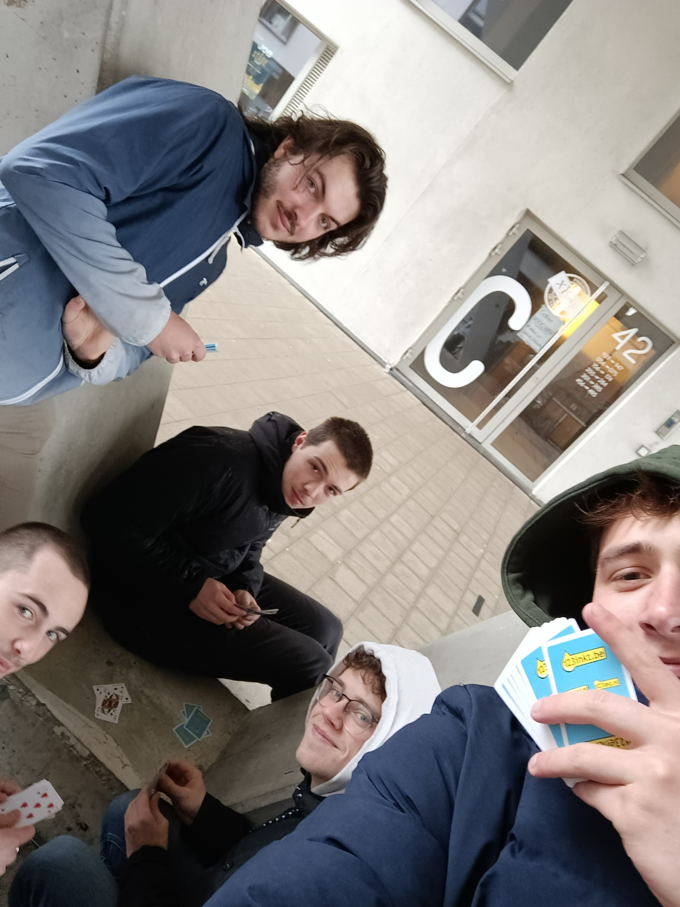

Team 7
We zijn een gepassioneerd team van developers.
Wout redt het regenwoud.
In onze game hebben we drie SDG's geïmplementeerd: SDG 15: Leven op het Land, SDG 16: Vrede en SDG 6: Schoon Water en Sanitair. Elk van deze doelen heeft specifieke doelstellingen en een beoogd effect binnen het spel. Door middel van interactieve en boeiende ervaringen wilden we niet alleen educatie bieden, maar ook inspireren tot positieve verandering in de echte wereld.
Over Ons
Wij zijn team 7, onze developers zijn Arno de Pauw, Bob Timmermans, Luka Samyn, Tijs Claeys en Wout Voet. Als activiteit buiten de les zijn we samen gaan kaarten.